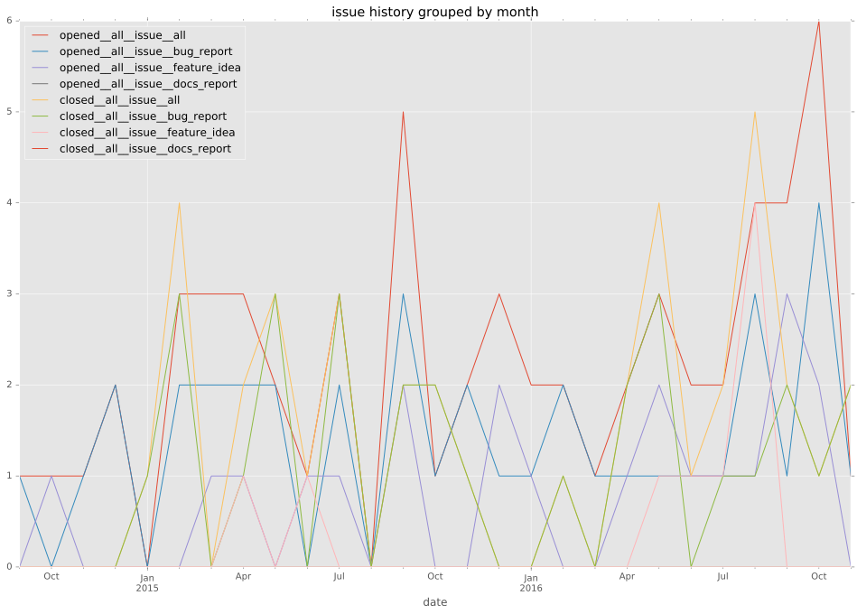
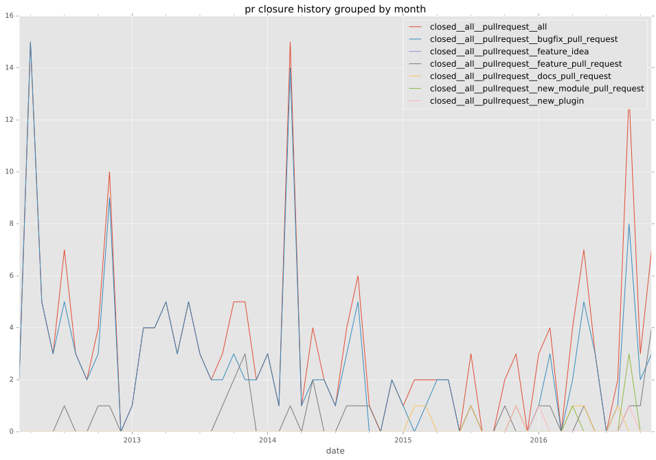
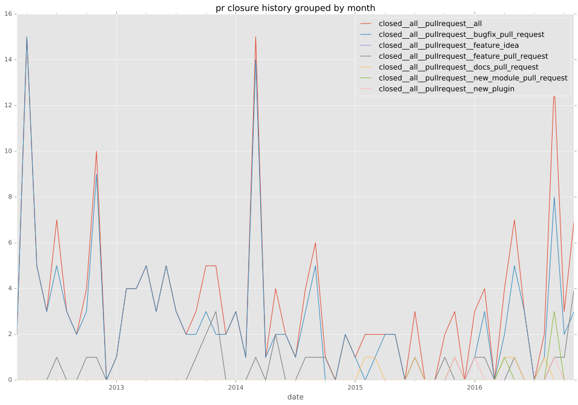

authors
maintainers
- ansible
contributors
- abadger : 73 commits
- bcoca : 65 commits
- mpdehaan : 35 commits
- jimi-c : 12 commits
- mscherer : 9 commits
- jpmens : 9 commits
- stoned : 5 commits
- varnav : 2 commits
- telsacolton : 2 commits
- sspans : 2 commits
- rhaido : 2 commits
- resmo : 2 commits
- jyap808 : 2 commits
- trbs : 1 commits
- sysadmin75 : 1 commits
- shlomozippel : 1 commits
- rhlmhrtr : 1 commits
- jctanner : 1 commits
- jbowes : 1 commits
- jbinto : 1 commits
- figpope : 1 commits
- dmage : 1 commits
- dcfsc : 1 commits
- JensRantil : 1 commits
total issue counts
unknown: 2
feature pull request: 35
docs report: 1
documentation pull request: 1
pullrequest: 198
docs pull request: 8
bugfix pull request: 150
feature idea: 17
issue: 52
new plugin: 1
bug report: 35
issue history

pullrequest history
 

days open by issue type
bugfix pull request
count: 224
std: 10.2009272402
min: 0
max: 60
median: 0.0
mean: 4.79017857143
all
count: 318
std: 62.382142115
min: 0
max: 482
median: 0.0
mean: 18.5786163522
documentation pull request
count: 1
std: nan
min: 0
max: 0
median: 0.0
mean: 0.0
pullrequest
count: 0
std: nan
min: nan
max: nan
median: nan
mean: nan
docs pull request
count: 15
std: 16.8415585751
min: 0
max: 49
median: 2.0
mean: 7.73333333333
docs report
count: 1
std: nan
min: 2
max: 2
median: 2.0
mean: 2.0
feature pull request
count: 39
std: 99.7251350669
min: 0
max: 421
median: 5.0
mean: 49.9487179487
feature idea
count: 6
std: 137.584034927
min: 0
max: 313
median: 40.5
mean: 105.833333333
issue
count: 0
std: nan
min: nan
max: nan
median: nan
mean: nan
new plugin
count: 1
std: nan
min: 21
max: 21
median: 21.0
mean: 21.0
bug report
count: 29
std: 136.106241102
min: 0
max: 482
median: 0.0
mean: 72.8620689655
closures grouped by total days open